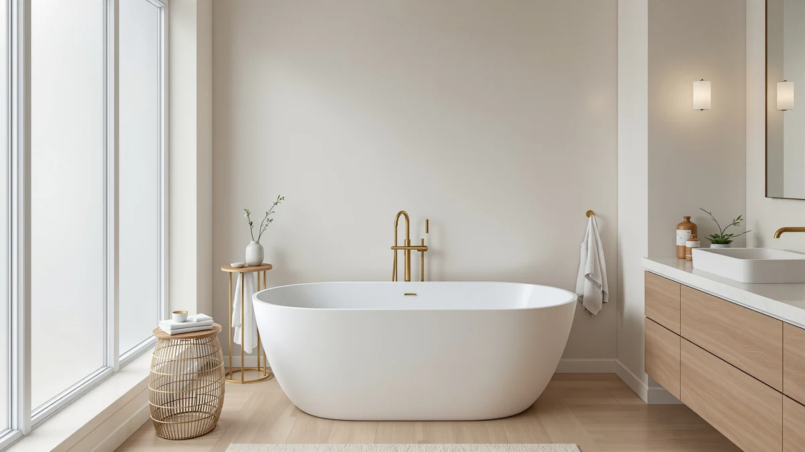

Best Freestanding Bath Taps (2026)
Prices and picks verified as of November 2026. Independent, reader-supported reviews.


Quick Answer
A freestanding bath tap needs to match your tub's spout reach, rim height, and finish, not just look good on its own. We compared floor-mount tub fillers on construction and features, then rounded up the acrylic freestanding tubs that pair well with one, and the Aolemi Floor Mount Bathtub Faucet came out on top for its solid-brass build, swivel gooseneck spout, and included handheld shower at a fraction of the price of comparable fillers.
Our pick: Aolemi Floor Mount Bathtub Faucet, $101.99 Check Price on Amazon
Bottom line: our top pick is the Aolemi Floor Mount Bathtub Faucet Freestanding Tub Filler at $101.99. The best budget option is the WOODBRIDGE 67" Acrylic Freestanding Bathtub Contemporary at $594.13.
Things to Know Before You Buy
- Floor-mount is a different install than deck-mount. A freestanding tap runs its supply lines up through the floor rather than through the tub deck, so the rough-in has to be planned before the finished floor goes down.
- Spout reach has to clear the tub. Measure the width of your tub and the distance from the floor to the rim; a spout that's too short will clip the edge, and one that's too long can overshoot the drain.
- Finish should match your other fixtures. Matte black, brushed nickel, and chrome all read very differently next to a white acrylic shell, so pick the tap finish before you lock in the tub.
- A handheld shower diverter adds real convenience. It lets you rinse the tub and rinse off after a bath without a separate shower fixture.
- Budget for a plumber. Even straightforward floor-mount kits typically need a licensed plumber for the rough-in, so factor that labor cost in alongside the faucet price.
Most freestanding soaking tubs don't come with a faucet, which means the tap is a separate purchase that has to be sized and finished to match. This guide starts with the floor-mount tub filler we'd buy first, then rounds up the acrylic freestanding tubs on the market right now that work well with one, so you can plan the whole setup instead of discovering a mismatch after both boxes arrive.
We leaned on published specs, manufacturer features, and verified buyer feedback rather than a showroom visit, since a tap and a tub bought separately online rarely ship to the same test bench. That means we're comparing documented construction, certifications, and reviewer-reported fit and finish, not a research-based plumbing trial.
If you already own your tub and just need the tap, skip to the Aolemi pick below. If you're starting from scratch, the comparison table further down shows price and best-use at a glance for every tap and tub in this roundup.
Why You Should Trust Us
This guide is written and maintained by Ilane Tall, who covers bathroom fixtures and freestanding tubs for Best Freestanding Bathtubs. We do not run a fake testing lab or claim to have installed every product on this page; our picks are based on published specifications, manufacturer documentation, and verified buyer reviews, cross-checked against plumbing code basics like cUPC certification where it applies.
How We Picked
We started from the freestanding tub fillers and acrylic soaking tubs currently sold on Amazon, then filtered for solid construction materials (solid brass for taps, reinforced acrylic for tubs), a certification where one is published, and a price that's competitive for the category. From there we leaned toward a swivel spout range wide enough to clear a standard tub and included hardware like drain kits or a handheld diverter, favoring a corrosion-resistant finish along the way, and we set aside listings with vague specs or no stated material.
How We Compared
We compared every pick on documented specs: material and finish, spout or tub dimensions, included hardware, and certifications like cUPC. We weighed that against current pricing and whatever verified owner feedback was available, and we cross-referenced installation requirements so the "best for" notes below reflect what each product actually demands at rough-in time, not just what the listing promises.
Our Picks

Aolemi Floor Mount Bathtub Faucet
What we like
- Solid brass construction with a corrosion-resistant matte black finish
- 360-degree swivel gooseneck spout for flexible positioning over the tub
- Handheld shower with 59-inch hose and a diverter knob to switch between spout and shower
- Installation hardware included for the floor-mount setup
Flaws but not dealbreakers
- Rough-in plumbing underneath the floor typically still needs a licensed plumber
- Only available in matte black, so it won't suit every finish scheme
- No review history yet to lean on since this is a newer listing
| Material | — |
| Size | — |
This floor-mount filler is built from solid brass rather than lighter-weight alloys, which is what lets it carry a matte black finish that resists the corrosion and wear that cheaper plated taps show within a year or two. The 360-degree swivel gooseneck spout gives it more flexibility than a fixed-spout filler, and the diverter knob switches water flow to the handheld shower for rinsing the tub or rinsing off after a bath.
It's a good fit for anyone replacing an existing floor-mount filler or finishing a new freestanding tub install, since the installation kit is included. Just plan on a plumber for the supply-line rough-in if that part of the plumbing isn't already in place.

Freestanding Bathtub 59 inch Acrylic
What we like
- Double-wall insulation retains water temperature longer than a single-shell tub
- Ergonomic reclined backrest supports the spine during a soak
- Chrome drain and overflow hardware included
- 59-inch footprint fits bathrooms that can't accommodate a 67-inch tub
Flaws but not dealbreakers
- Costs more than some similarly sized acrylic tubs
- Chrome-only drain finish may not match a matte black floor-mount tap
- No rating history yet since this is a newer listing
| Material | — |
| Size | 59 Inch |
This tub's main selling point is heat retention: the double-wall shell keeps bathwater warmer for longer than a thin single-shell tub, and the reclined backrest is shaped to support the lower back through a longer soak. At 59 inches, it's sized for bathrooms where a 67-inch tub simply won't fit.
Pair it with a matte black floor-mount filler if you want the drain and faucet finishes to match, or stick with its included chrome hardware for a simpler, lower-cost finish scheme.

67'' Acrylic Freestanding Bathtub Extra-Deep
What we like
- Extra-deep basin for a fuller, shoulder-covering soak
- High-gloss acrylic shell reinforced with fiberglass for durability
- Double-walled construction for heat retention and reduced noise
- Chrome drain included
Flaws but not dealbreakers
- Larger footprint may not suit a small bathroom
- Heavier and trickier to maneuver during install than a shallower tub
- No verified reviews yet since this is a newer listing
| Material | — |
| Size | 67 Inch |
Most 67-inch acrylic tubs top out at a standard soaking depth, but this one is built with an extra-deep basin so the water line sits higher on the body. The double-walled glossy acrylic shell is the same construction approach used elsewhere in this roundup for heat retention, just applied to a deeper form.
It's a good match for anyone prioritizing soak depth over footprint, since the extra depth doesn't come with a smaller shell.

67" Acrylic Freestanding Bathtub Deep
What we like
- cUPC certified
- Non-slip textured surface for safer footing
- Anti-clog pop-up drain with an integrated hair catcher
- Multi-layer acrylic shell for durability
Flaws but not dealbreakers
- Specs overlap closely with its IDEALHOUSE sibling above, so compare both before choosing
- White finish only
- No verified reviews yet since this is a newer listing
| Material | — |
| Size | 67 inch |
This 67-inch tub carries cUPC certification, which some buyers and inspectors want documented before a bathroom remodel passes off. The non-slip surface and anti-clog drain with a built-in hair catcher are practical, day-to-day details that matter more after a few months of use than they do in listing photos.
It sits right alongside the extra-deep IDEALHOUSE model above on price and size, so the certification and drain hardware are the real differentiators if you're deciding between the two.

WOODBRIDGE 67" Acrylic Freestanding Bathtub
What we like
- Lowest price in this roundup at 67 inches
- Matte black drain and overflow kit pairs naturally with a dark-finish tap
- Lucite acrylic shell reinforced with Ashland resin and fiberglass
- WOODBRIDGE has a longer track record in the freestanding tub category than most of the newer listings here
Flaws but not dealbreakers
- 60-gallon capacity is modest for its 67-inch length
- White-only shell limits color options beyond the drain trim
- No rating history pulled for this specific listing yet
| Material | — |
| Size | 67 Inch |
This is the budget pick of the 67-inch tubs here, and the matte black drain and overflow hardware is a small but useful detail if you're pairing it with a matte black floor-mount tap like our top pick above. The shell itself is high-gloss white Lucite acrylic reinforced with resin and fiberglass, which is the same basic construction approach as the pricier tubs on this list.
WOODBRIDGE has sold acrylic freestanding tubs in this size range for a while, which counts for something when every other listing here is a newer entrant with no review history.

59 Inch Acrylic Freestanding Bathtub
What we like
- 4mm thick high-gloss acrylic shell resists scratching
- cUPC certified
- Non-slip base
- 59-inch length fits bathrooms that can't take a 67-inch tub
Flaws but not dealbreakers
- The priciest 59-inch tub in this lineup
- White finish only
- No verified reviews yet since this is a newer listing
| Material | — |
| Size | 59 Inch |
Like its 67-inch sibling above, this tub carries cUPC certification and uses a thick, scratch-resistant acrylic shell reinforced with fiberglass resin. The 59-inch length is the main draw here: it brings the same certified, deep-soak construction to a bathroom that can't fit a 67-inch tub.
It costs more than the EliteEdge 59-inch tub in this roundup, so it makes the most sense if the certification and non-slip base are priorities worth paying for.

67 Inch Acrylic Freestanding Bathtub
What we like
- Ergonomic contoured back support
- Double-layer acrylic construction for heat retention
- 4mm thick shell resists scratching and fading
- cUPC certified
Flaws but not dealbreakers
- The most expensive tub in this roundup
- White finish only
- No rating history yet since this is a newer listing
| Material | — |
| Size | 67 Inch |
This tub's ergonomic contours are the headline feature: the shaped backrest is built to support the spine during a longer soak, rather than leaving you leaning against a flat wall. It shares the same 4mm thick, double-layer acrylic construction as other certified tubs in this roundup.
It's the priciest 67-inch option here, so it's worth the upgrade mainly if the contoured back support is something you'll actually use on a regular basis.
Quick Comparison
| Product | Material | Price | Rating | Best for | Get it |
|---|---|---|---|---|---|
| Aolemi Floor Mount Bathtub Faucet | — | $101.99 | — | Complete floor-mount tap kit | View on Amazon → |
| Freestanding Bathtub 59 inch Acrylic | — | $699.99 | — | Compact tub for a floor-mount tap | View on Amazon → |
| 67'' Acrylic Freestanding Bathtub Extra-Deep | — | $649.99 | — | Extra-deep soak | View on Amazon → |
| 67" Acrylic Freestanding Bathtub Deep | — | $754.99 | — | Certified pick | View on Amazon → |
| WOODBRIDGE 67" Acrylic Freestanding Bathtub | — | $594.13 | — | Best value at 67 inches | View on Amazon → |
| 59 Inch Acrylic Freestanding Bathtub | — | $789.99 | — | Best 59-inch pick | View on Amazon → |
| 67 Inch Acrylic Freestanding Bathtub | — | $799.99 | — | Ergonomic design | View on Amazon → |
The Competition
We looked at several other floor-mount tub fillers before settling on the Aolemi as our top pick. A handful of brushed-nickel and chrome fillers had similar swivel-spout designs but didn't list a handheld shower diverter, which we considered a meaningful miss for the price. We also passed on a few budget fillers made from lighter zinc-alloy bodies rather than solid brass, since that construction tends to corrode faster at the floor-mount joint where it's exposed to standing water. On the tub side, we set aside several near-identical white acrylic ovals from brands with no track record and no stated certification, and we kept the ones here because they documented either a certification, a distinct depth, or hardware that justified the price difference.
What these prices have actually done
We check the price of every product on this page every hour and keep the record. These figures are observations, not estimates or forecasts.
- Aolemi Floor Mount Bathtub Faucet Freestanding Tub Filler Standing has ranged from $101.99 to $149.99 across 46 hourly price checks since September 27, 2026. It was $101.99 at the last check, the lowest price we have recorded for it.
- Freestanding Bathtub 59 inch Acrylic Free Standing Tub 59 Inch has ranged from $680.00 to $699.99 across 42 hourly price checks since September 27, 2026. It was $699.99 at the last check.
- 67" Acrylic Freestanding Bathtub has held at $754.99 across 42 hourly price checks since September 27, 2026. It was $754.99 at the last check.
- WOODBRIDGE 67" Acrylic Freestanding Bathtub Contemporary Soaking Tub has ranged from $591.71 to $783.00 across 40 hourly price checks since September 27, 2026. It was $594.13 at the last check, the lowest price we have recorded for it.
- 59 Inch Acrylic Freestanding Bathtub has ranged from $599.99 to $789.99 across 25 hourly price checks since October 14, 2026. It was $789.99 at the last check.
Last updated November 26, 2026. Amazon prices change constantly; the figure you see on Amazon right now is the one that counts.
Frequently Asked Questions
What is a freestanding bath tap?
A freestanding bath tap, also called a floor-mount tub filler, is a faucet that stands on the bathroom floor beside the tub instead of mounting on the tub deck or wall. It connects to your plumbing through the floor and curves up and over the rim to fill the tub, which is the standard setup for a freestanding soaking tub that has no deck to mount a faucet on.
How do I know what size freestanding tap I need?
Match the spout reach to your tub's width and the faucet height to its rim height. Most floor-mount fillers have a swivel gooseneck spout that adjusts several inches, but you still want the spout to clear the inner wall of the tub and center over the drain area without crowding the rim.
Can I install a freestanding tub filler myself?
Mounting the faucet body is straightforward, but the rough-in plumbing underneath the floor is not a typical DIY job. A floor-mount filler needs supply lines routed and anchored before the finished floor goes down, so most homeowners bring in a licensed plumber for that part even if they handle the rest of the install.